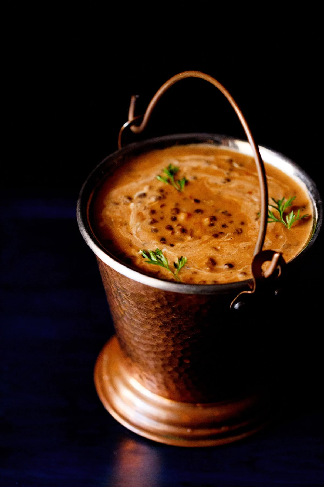

Besan Ladoo is a classic North Indian sweet made from roasted gram flour, ghee, and sugar, often flavored with cardamom and garnished with nuts. It is one of the most popular festive treats, especially during Diwali and Ganesh Chaturthi. The magic of this dessert lies in slow-roasting the gram flour in pure ghee until it releases a nutty aroma and turns golden brown, which gives the ladoos their rich, melt-in-the-mouth texture.

Chana dishes, especially Chole (spiced chickpeas), are a staple of North Indian cuisine and are loved for their bold and hearty flavors. Made by simmering chickpeas in a thick, aromatic gravy of onions, tomatoes, and a unique blend of spices, this dish is often paired with bhature (deep-fried bread) or rice. Chole Bhature is not just a meal but an indulgent experience that is enjoyed during festivals, street food outings, and even as a Sunday family special.

Dal Makhani is one of the most iconic dishes of North Indian cuisine, celebrated for its rich, creamy texture and smoky flavor. Prepared with whole black lentils (urad dal) and red kidney beans (rajma), the dish is slow-cooked for hours to allow the lentils to soften and absorb the spices fully. Butter and fresh cream are then added, giving it a luscious, velvety finish that pairs beautifully with naan, roti, or rice.

Kadai Paneer is a vibrant and flavorful North Indian curry made with paneer (Indian cottage cheese), bell peppers, onions, and tomatoes cooked together with freshly ground spices known as kadai masala. The dish gets its name from the traditional Indian wok-like pan called a kadai, in which it is prepared. What makes Kadai Paneer special is the balance of spicy, tangy, and slightly smoky flavors, making it one of the most loved paneer dishes in Indian cuisine.

Kaju Katli, also known as Kaju Barfi, is one of India’s most loved sweets, especially during festivals and celebrations like Diwali. Made with finely ground cashews, sugar, and a hint of cardamom, this diamond-shaped delicacy has a smooth, melt-in-the-mouth texture. Its thin silver leaf (varak) topping gives it a festive and royal touch, making it not just a sweet but also a symbol of love and joy when gifted to friends and family.

Palak Paneer is a wholesome and nutritious North Indian dish made with soft cubes of paneer (Indian cottage cheese) cooked in a smooth, mildly spiced spinach gravy. The vibrant green curry is flavored with garlic, ginger, onions, and aromatic spices, giving it a delicious balance of earthy and creamy flavors. Rich in iron, protein, and vitamins, Palak Paneer is not only tasty but also highly nutritious, making it a popular choice in Indian households.

Paneer Butter Masala, also known as Butter Paneer, is one of the most loved North Indian curries, famous for its rich and creamy texture. It is made with soft paneer cubes simmered in a smooth tomato-based gravy enriched with butter, cream, and a blend of aromatic spices. The subtle sweetness of the tomatoes perfectly balances the warmth of spices like garam masala, cardamom, and kasuri methi, creating a luxurious dish that melts in the mouth.

Paneer Tikka is a popular North Indian appetizer that showcases the perfect balance of smoky flavors and aromatic spices. Cubes of paneer are marinated in a mixture of yogurt, red chili powder, turmeric, garam masala, ginger, garlic, and a hint of lemon juice. They are then skewered along with onions, bell peppers, and tomatoes before being grilled or roasted until charred and smoky. The result is a dish that is crisp on the outside yet soft and juicy inside.